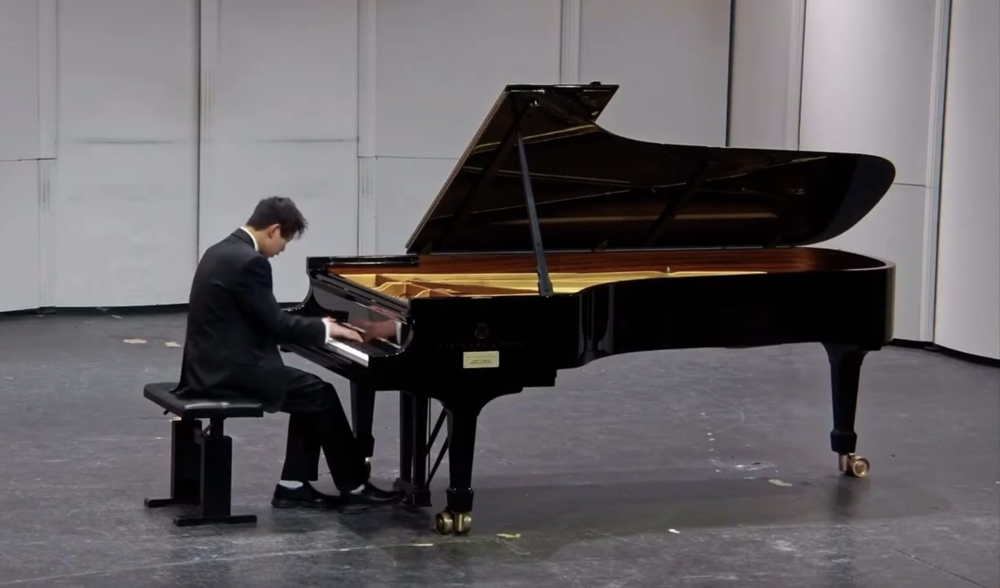
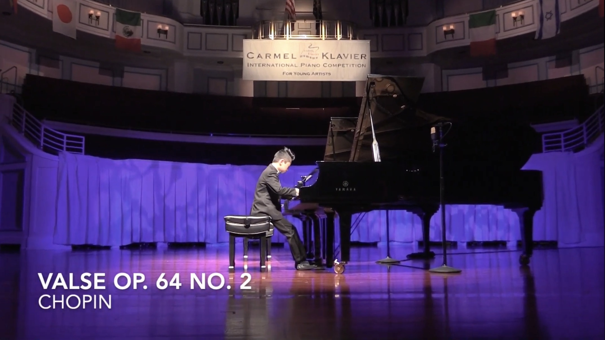

Calm at times; rage at times
I’ve played for about twelve years, studying with the CMU Prepatory School. I've played all sorts of music, ranging from baroque to classical, romantic, and even some contemporary.

Playing since I was just 5 years old, there are some cute photos and videos of me, and that can be found on my YouTube channel, @alex09092009. There's other easter eggs, but I'll leave you to that.

Along the way, I've competed and performed at various sites, including the famous New York Carnegie Hall.

When I was little, all I cared about was competing. I've won the Grand Prize at the Carmel Klavier International Piano Competion, along with several other accolades with the Pittsburgh International Piano Competition and the Steinway Society of Western Pennsylvania competition.

But as I grew older, I realized that I felt more free when performing and competing. I realized that I was more expressive -- which came with a technical risk, but in my eyes, a risk worth taking. I presented myself better, and the music flowed better.
Some people also ask me how I manage to be able to practice the same piece every day without ever feeling bored. It's a good question, and I think my answer is the fact that I'm playing the same piece with a different character every day. My playing shifts with my mood beautifully, and music helps calm me at times. It's added colors to my world, and a special type of art that changes my way of thinking about and looking at life.
